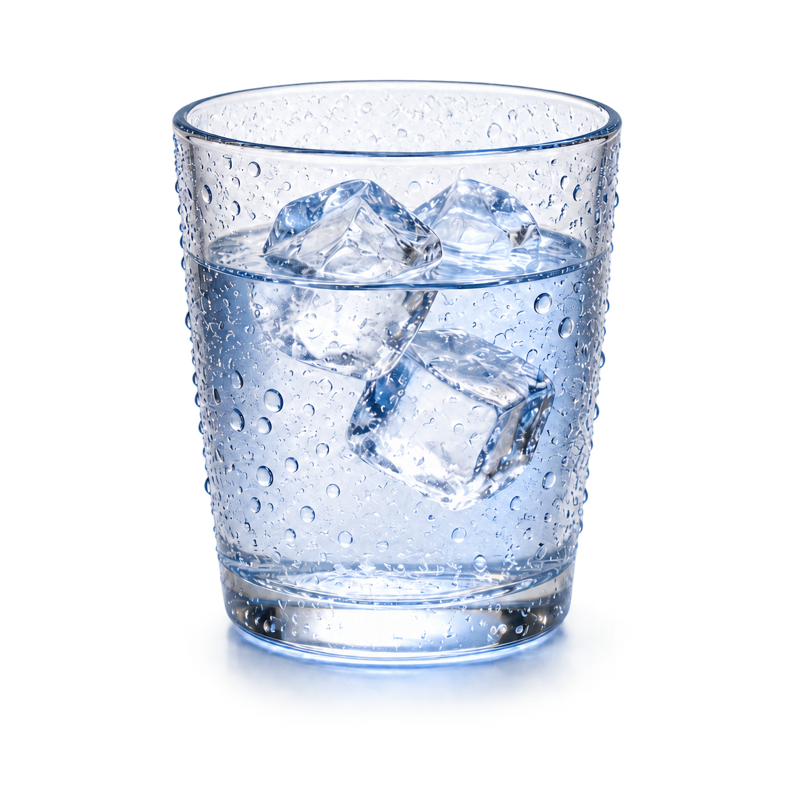

<!doctype html><html lang="zh-CN"><meta charset="utf-8"><meta name="viewport" content="width=device-width,initial-scale=1"><title>柔和彩色科普 · 冷杯水滴</title><link rel="stylesheet" href="theme.css?v=1"><main><header><strong>柔和彩色科普 · 完整解释页</strong><a href="comparison.html">设计与实际对照</a><a href="atlas.html">效果参考图板</a><a href="README.md">制作记录</a></header><div class="frame" id="frame"><div id="stage"><div id="content"><div class="eyebrow">日常科学 / 物质的变化</div><h1 id="title">冷杯外的<span><em>水滴</em>，从哪里来？</span></h1><div class="lead" id="lead">看懂一个生活现象，认识一种物质变化。</div><div class="steps"><section class="step" id="step-0"><div class="step-number">01</div><div><h2>空气里有水蒸气</h2><p>通常看不见，但它一直在我们周围。</p></div></section><section class="step" id="step-1"><div class="step-number">02</div><div><h2>遇到更冷的杯壁</h2><p>水蒸气在冷表面冷却。</p></div></section><section class="step" id="step-2"><div class="step-number">03</div><div><h2>变成液态小水滴</h2><p>这个变化过程，叫作凝结。</p></div></section></div><div class="phase" id="phase"><span class="pill">气态</span><svg viewBox="0 0 115 35" aria-label="变为"><path id="phase-arrow" d="M5 18H105M92 6L105 18 92 30" fill="none" stroke="currentColor" stroke-width="3" stroke-linecap="round" stroke-linejoin="round"/></svg><span class="pill">液态</span></div><svg class="annotation" viewBox="0 0 1600 800" aria-hidden="true"><circle id="target" cx="1255" cy="485" r="25"/><path id="leader" d="M1280 482 L1296 428"/></svg><div class="callout" id="callout">杯外的小水滴<small>来自空气中的水蒸气</small></div><div class="conclusion" id="conclusion"><strong>不是杯里的水漏出来</strong></div><div class="source">知识依据：USGS 水循环 · 插画为示意</div></div><div class="subtitle" id="subtitle"></div></div></div><div class="controls"><button id="play" disabled>播放 / 重播</button><button id="pause">暂停</button><button id="reset" disabled>回到开场</button><input id="seek" type="range" min="0" max="18000" value="18000" disabled aria-label="讲解时间"><output id="clock">准备中</output><label>字幕字号 <input id="font" type="range" min="20" max="44" value="32"></label><output id="font-value">32 px</output><label><input id="reduce" type="checkbox">减少装饰运动</label></div><p class="status" id="status">正在准备字体与插画…</p></main><script src="definition.js"></script><script src="player.js"></script></html>
